Valley View Industrial
Tall walls with buildings close behind them. At this height the question is whether the whole slope holds, not just the wall, so global stability was checked along the tallest runs.
Projects
A sample of the more than 1,000 projects we have designed for contractors, builders and developers.
A few of the harder ones, and the problem each one had to solve. Built by C&W Stoneworks.
Tall walls with buildings close behind them. At this height the question is whether the whole slope holds, not just the wall, so global stability was checked along the tallest runs.

A tiered wall stepping up from a pond. The upper wall loads the lower one and water sits at the toe, so the tiers were checked together for global stability.

A triple tiered wall at the pond, walls behind buildings and rock at the base, all on one site. Each condition got its own wall schedule so the crew could build to what they found.

Stone walls below a fire lane with structures close behind. Footings get deeper as a structure gets closer, and global stability was checked on the tallest sections.
More recent work, by type.
| Project | City | Scope |
|---|---|---|
| Lakeside at Silveron | Flower Mound | Retaining walls |
| Acorn North Ph 2 | Princeton | Retaining walls |
| IKEA Ph 2 | Grand Prairie | Retaining walls |
| Valley View Industrial | Irving | Retaining walls |
| Northpointe West Ph 4 | Fort Worth | Retaining walls |
| Northwood Club Pickleball Courts | Dallas | Retaining walls |
| Alliance Town Center South Multifamily Ph 5 | Fort Worth | Retaining walls |
| Oxenfree at Stonebriar | Frisco | Retaining walls |
| Wolf Creek Farms BTR | Melissa | Retaining walls |
| Horizon Lakes Village 3 Ph 1 | McLendon-Chisholm | Retaining walls |
| Legacy Hills (Del Webb and Pulte) | Celina | Retaining walls |
| Peachtree Meadows Ph 1 | Rockwall | Retaining walls |
| Menchaca Apartments | Austin | Retaining walls |
| Sahota Center at Rattler Road | San Marcos | Masonry pond retaining walls |
| NexPoint Irving Storage | Irving | Retaining walls |
| Doe Branch Erosion Mitigation | Celina | Gabion retaining wall |
| Bluff Springs Ph 3 | Ferris | Retaining walls |
| Cinema Retail Building | Hudson Oaks | Masonry retaining walls |
| Project | City | Scope |
|---|---|---|
| Westpoint Park | Fort Worth | Entry monuments and brick screen wall |
| Normandale Baptist Church | Fort Worth | Entry sign wall |
| Light Farms | Celina | Monuments and screen walls |
| Painted Tree | McKinney | Monuments and screen walls |
| Solterra | Mesquite | Enhanced columns and screen walls |
| Star Trail | Prosper | Monuments and screen walls |
| Wild Oaks | Shady Shores | Entry monument sign wall and columns |
| Lone Star Ranch | Mansfield | Entrance logo column |
| Glen at Uptown Ph 1 | Celina | Hardscape structural |
| The Orchard Ph 1 | Melissa | Hardscape structural |
| Project | City | Scope |
|---|---|---|
| Legacy Hills Amenity Center | Celina | Pavilion structure |
Recent retaining walls we engineered, built by C&W Stoneworks.
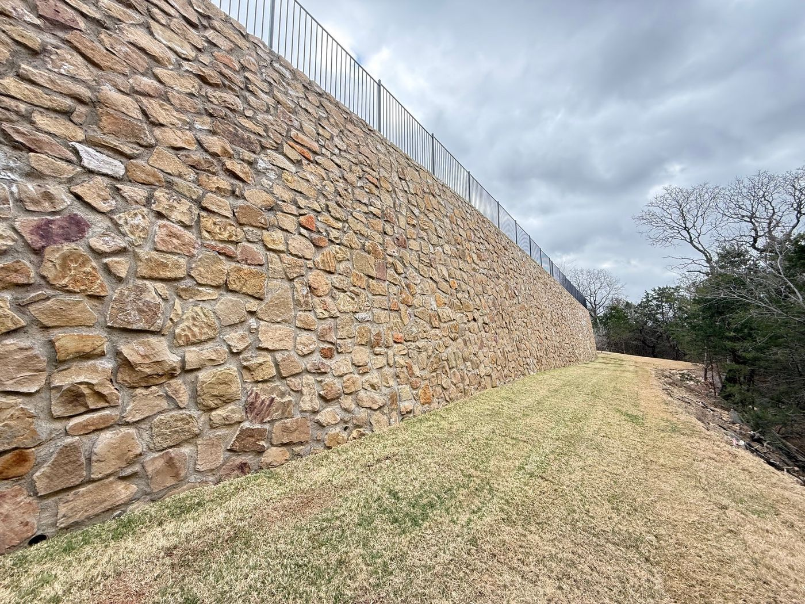
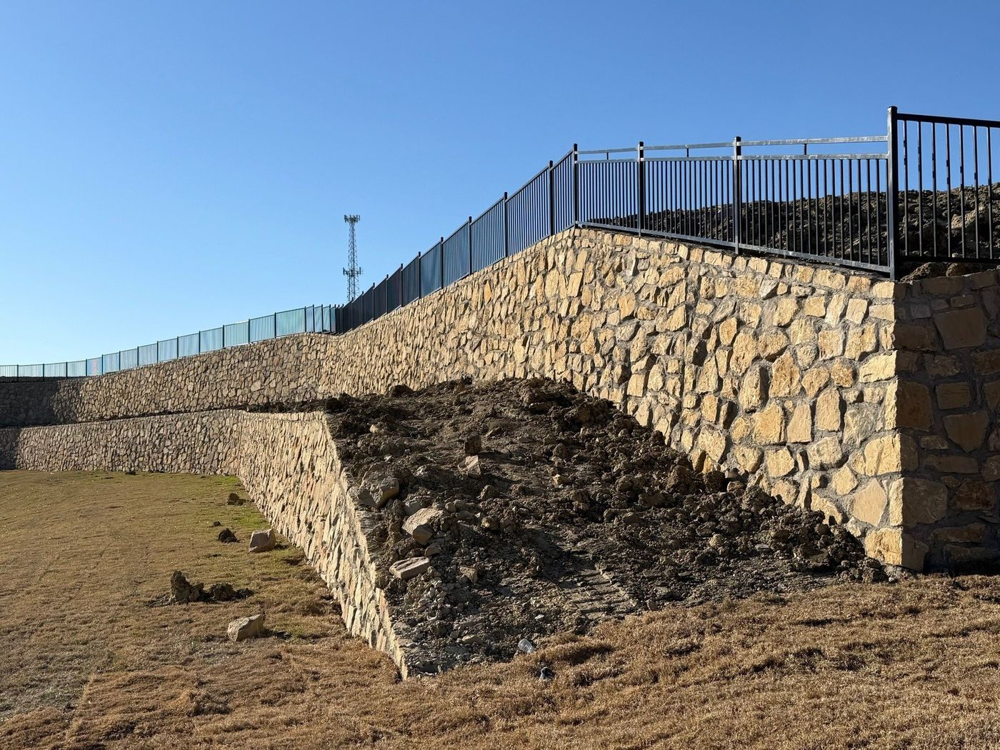
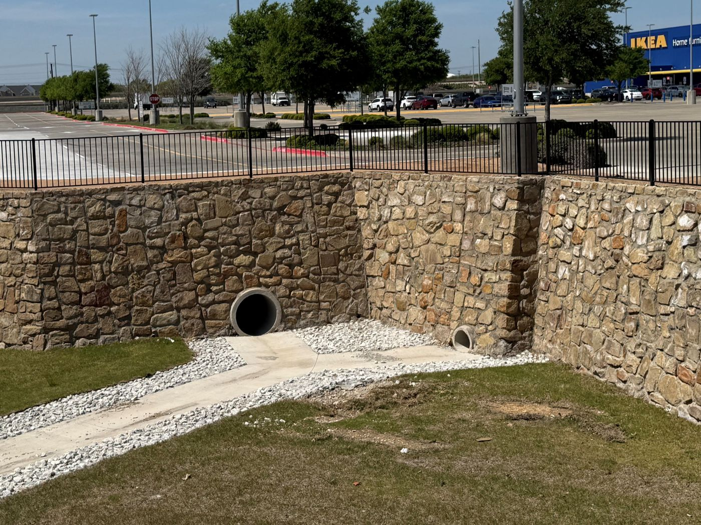
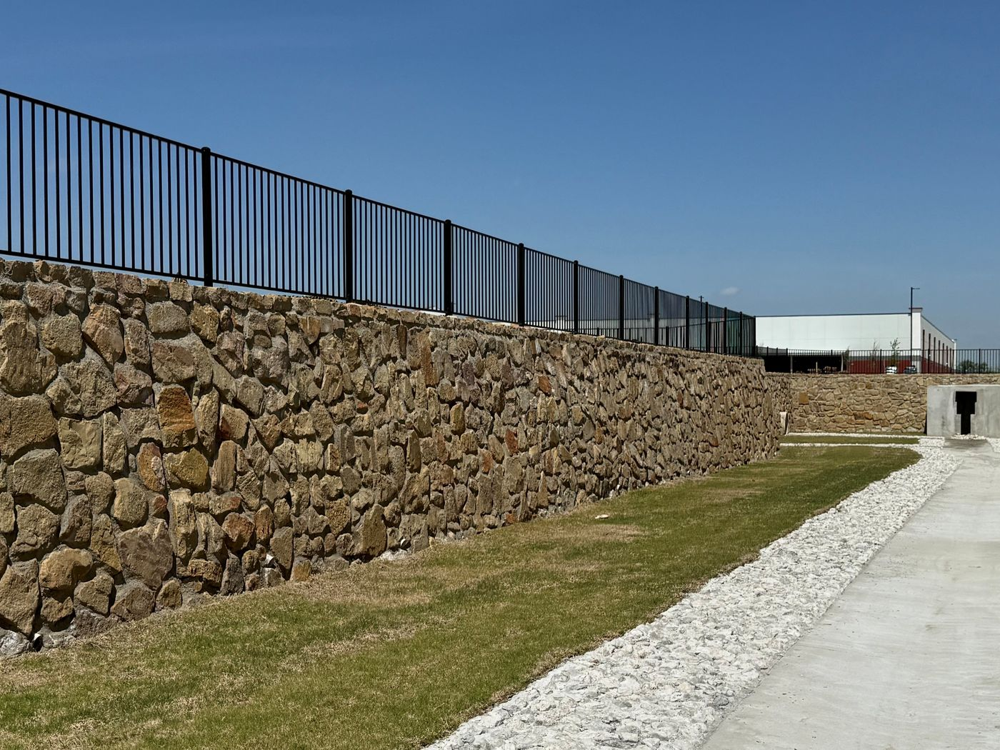
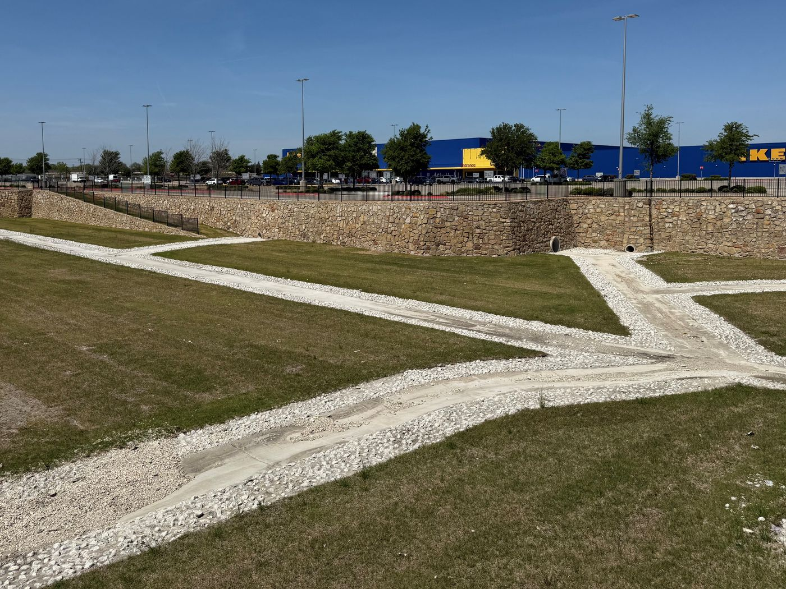


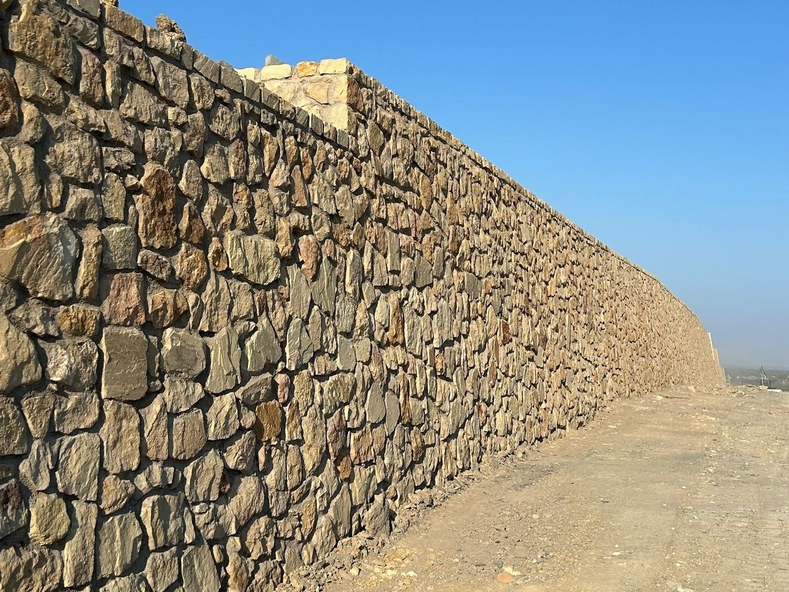
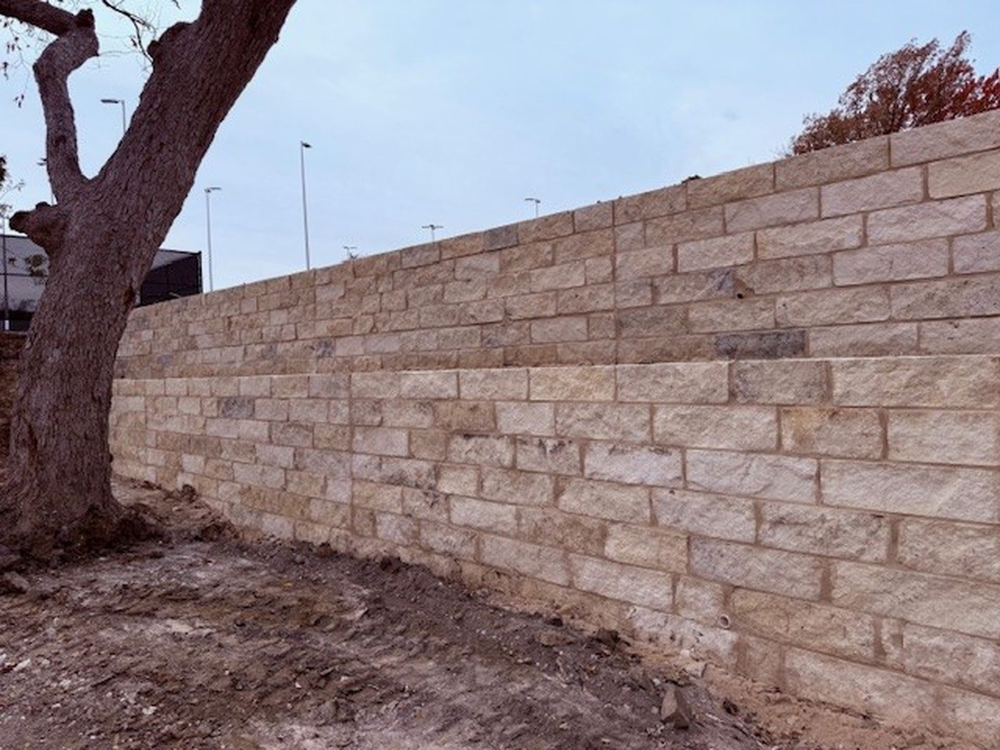
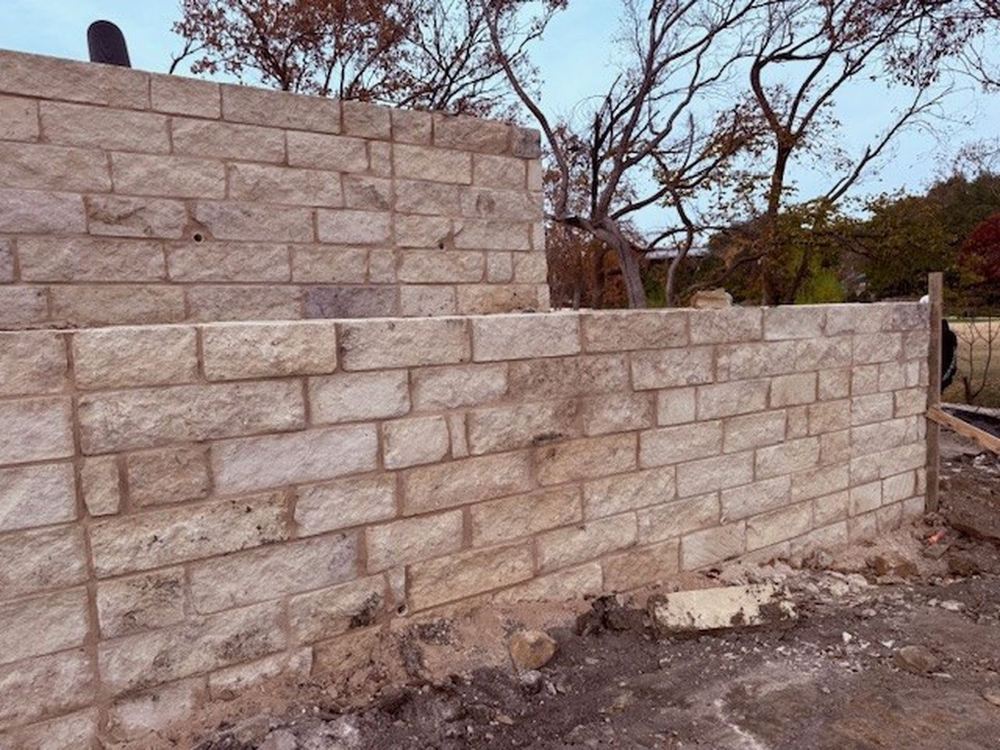
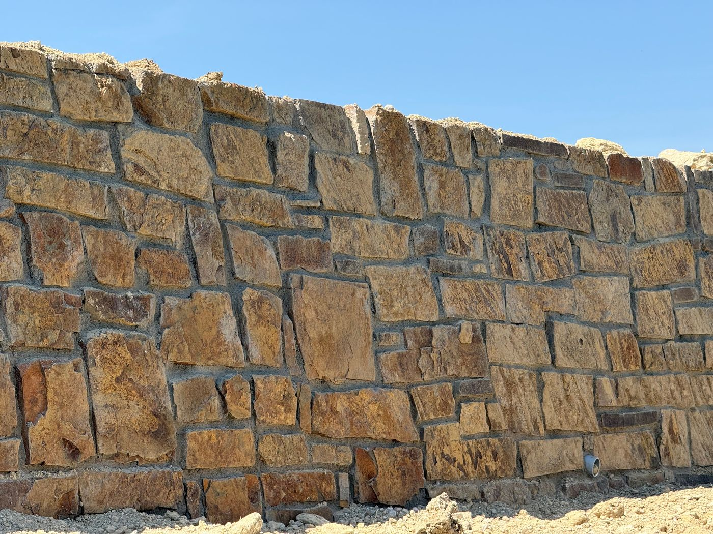
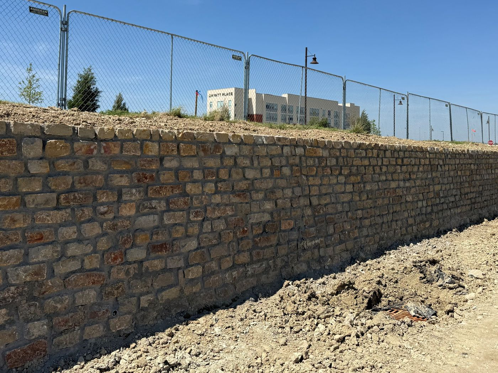
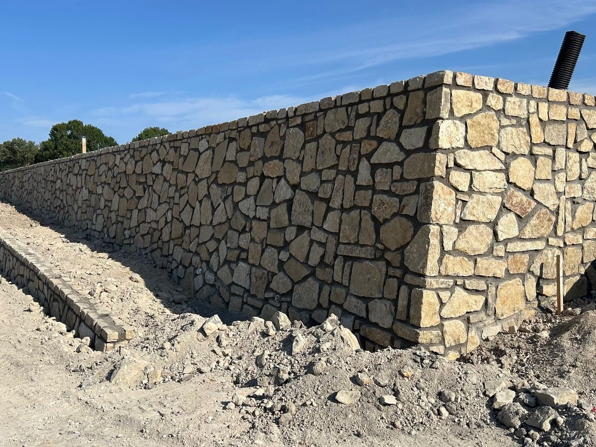
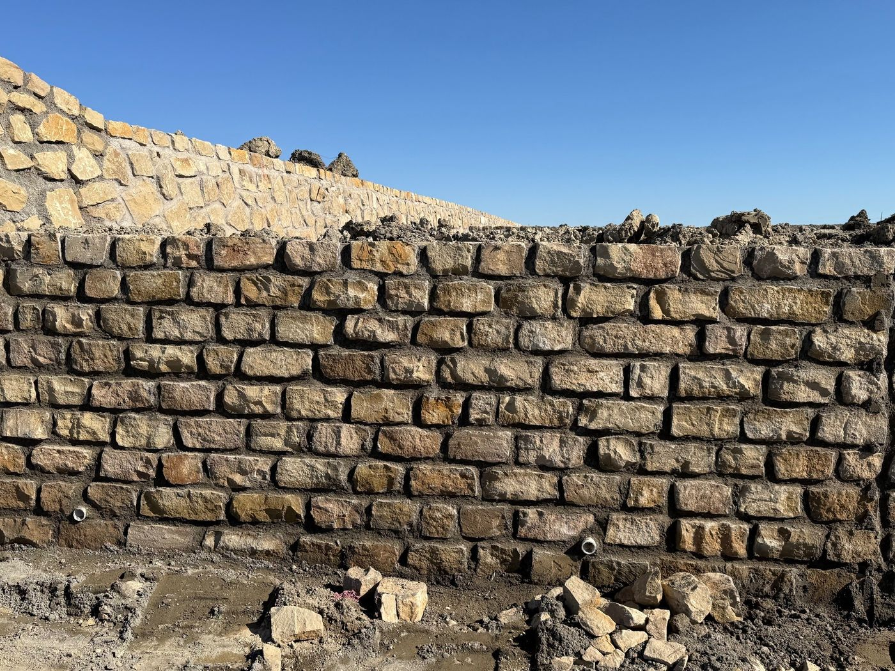
Entry monuments and sign walls we engineered in Fort Worth.
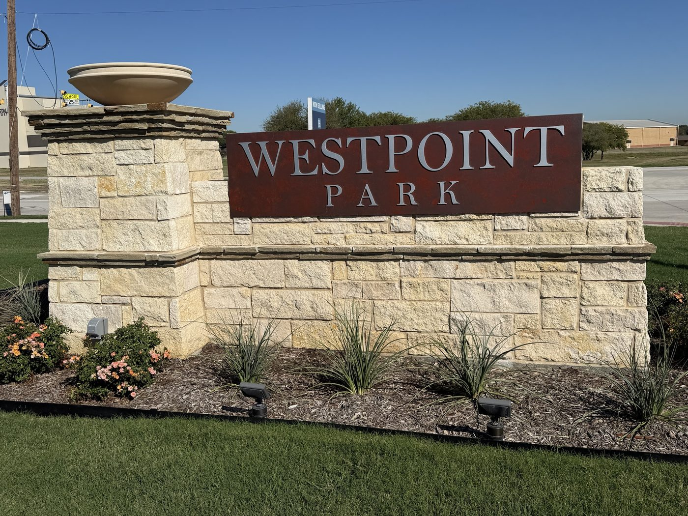
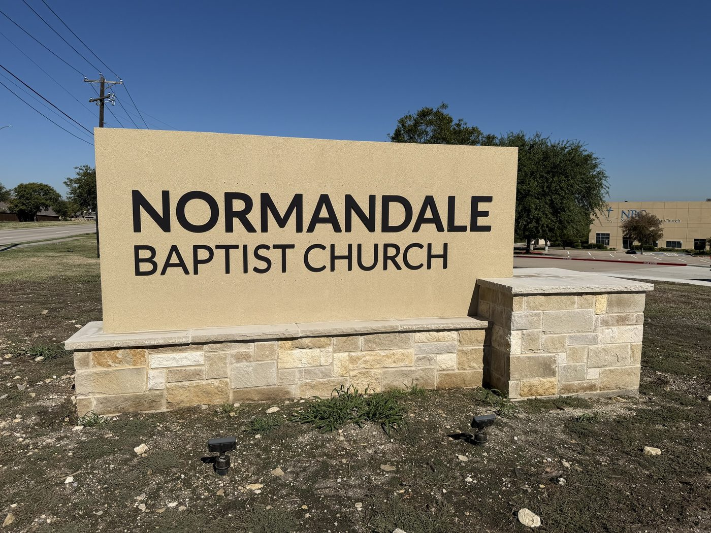